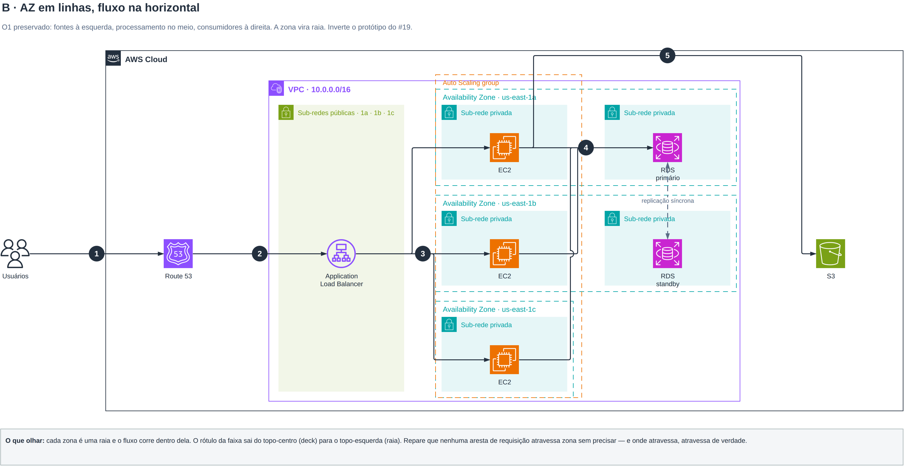

O #19 deixou a AZ virar faixa desenhada, e o protótipo de lá desenhou essas faixas como colunas. O O1 do #5 — 17 de 24 diagramas oficiais — quer o fluxo correndo esquerda → direita. Os dois querem a mesma horizontal, e nenhuma lâmina do deck decide, porque nenhuma tem faixa de AZ e fluxo numerado ao mesmo tempo.
Cinco desenhos da mesma arquitetura — app web 3 camadas, 3 AZs, 5 passos numerados — e duas varreduras que decidem sem apelar para gosto.

Trocar o eixo é transpor a grade. As checagens do #8 que esta pergunta aciona
— A4.2 não-membro dentro da faixa, A5.5 aresta cortando faixa alheia,
A5.1 cruzamentos, A5.7 direção do fluxo — são todas de incidência: quem toca
quem. Incidência é invariante por transposição. Seis modelos diferentes, os dois eixos:
| caso | A4.2 H/V | A5.5 H/V | A5.1 H/V | A5.7 H/V | proporção H/V |
|---|---|---|---|---|---|
| 3×4 leque + convergência | 0 / 0 | 2 / 2 | 0 / 0 | 1,00 / 1,00 | 1,85 / 0,91 |
| 3×4 com buraco | 0 / 0 | 0 / 0 | 0 / 0 | 1,00 / 1,00 | 1,85 / 0,91 |
| 2×6 cadeia | 0 / 0 | 0 / 0 | 0 / 0 | 1,00 / 1,00 | 4,06 / 0,41 |
| 4×5 malha | 0 / 0 | 5 / 5 | 0 / 0 | 1,00 / 1,00 | 1,77 / 0,98 |
| 3×5 com pulo de etapa | 0 / 0 | 1 / 1 | 0 / 0 | 1,00 / 1,00 | 2,32 / 0,74 |
| 3×4 com aresta transversal | 0 / 0 | 0 / 0 | 0 / 0 | 1,00 / 1,00 | 1,85 / 0,91 |
O O24 mediu 12 de 12 PDFs de Reference Architecture em 16:9. O O22 mediu 5 a 11 passos numerados. Zonas desenhadas: 2 a 4. Com o mesmo motor de layout, o erro em oitavas contra 16:9, para toda combinação realista:
| zonas | etapas | H (fluxo →) | erro | V (fluxo ↓) | erro | vence |
|---|---|---|---|---|---|---|
| 2 | 5 | 3,37 | 0,64 | 0,49 | 1,28 | H |
| 3 | 4 | 1,85 | 0,04 | 0,91 | 0,66 | H |
| 3 | 9 | 4,23 | 0,87 | 0,42 | 1,45 | H |
| 4 | 5 | 1,77 | 0,00 | 0,98 | 0,59 | H |
| 4 | 11 | 3,95 | 0,80 | 0,45 | 1,37 | H |
E o teste que fecha o argumento — o regime da lâmina 9, onde não há fluxo numerado e as “etapas” são só as camadas de sub-rede:
| caso | H | V | vence |
|---|---|---|---|
| 2 AZ × 2 camadas | 1,30 | 1,18 | H |
| 2 AZ × 3 camadas | 1,99 | 0,81 | H |
| 3 AZ × 2 camadas | 0,90 | 1,76 | V |
| 3 AZ × 3 camadas | 1,37 | 1,20 | H |
No B, uma aresta ainda atravessa faixa alheia: ec2-c → rds-a passa por cima de
us-east-1b. No A, exatamente a mesma. Varrendo as 6 permutações de raia nos dois eixos:
| ordem das raias | A5.5 em H | A5.5 em V |
|---|---|---|
| 1a · 1b · 1c | 1 | 1 |
| 1a · 1c · 1b | 0 | 0 |
| 1b · 1a · 1c | 1 | 1 |
| 1b · 1c · 1a | 0 | 0 |
| 1c · 1a · 1b | 1 | 1 |
| 1c · 1b · 1a | 1 | 1 |
n! com n entre 2 e 4 são 2 a 24 permutações, força bruta trivial.
Cuidado com heurística: “põe o alvo da convergência no meio” apenas troca um cruzamento por outro
(medido). Varra, não adivinhe.a recomendação
o deck, com fluxo enfiado dentro
a recomendação, completa
n! permutações no gerador.a saída do #6, aplicada a zona
não é candidato — é o #19 já em vigor